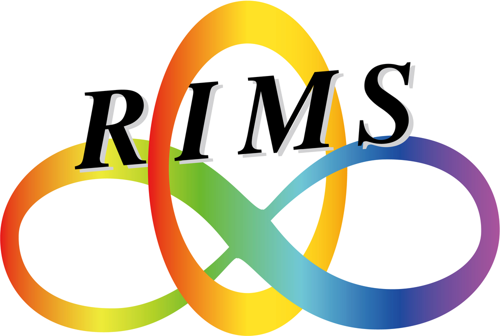

🌟 RIMS 共同研究（2026年，公開型）
数理最適化の最前線

🗓 概要
- 研究集会タイトル：数理最適化の最前線
- 研究代表者：北原 知就 (九州大学)
- 期間：2026年9月1日(月)・2日(火)
- 場所：京都大学 数理解析研究所 420号室 (〒606-8502 京都市左京区北白川追分町）
🎯 目的
数理最適化は，複雑に絡み合った条件の下で最適な選択肢を選び出す技術であり，機械学習やデータサイエンス、ロボティクスといった先端分野から，医療，物流，エネルギーといった実社会の課題に至るまで，多方面で不可欠な役割を果たしています。近年では，AIに関連するアルゴリズムの開発や現実世界の複雑な課題に対応するため，数理最適化は重要な基盤技術として注目を集めています。数理最適化には伝統的に離散最適化と連続最適化という枠組みがありますが，現状それらの分野間の壁を越えた議論や情報交換の場は限られています。
本研究集会は，「数理最適化の最前線」というテーマの下，数理最適化分野の最先端の研究を集約し，幅広い視点から議論を深めることを目指します。本研究集会では，理論研究，アルゴリズム開発，実社会への応用といった多様なトピックを取り上げ，分野横断的な知見を共有する場を提供します。これにより，参加者は最新の研究動向を把握するだけでなく，新しい発想やコラボレーションの機会を得ることが期待されます。また，若手研究者の積極的な参加を促し，幅広い世代の交流の場を提供することも目指します。
✅ 研究集会実施方法
- 京都大学数理解析研究所(RIMS)での対面を原則として，オンラインとのハイブリッド型を予定しております。
- 対面での実施可否につきましては，京都大学の方針に従うものといたします。
- 1件の発表時間は(25分または35分)＋質疑5分を基本とし，1セッションは2件から4件の発表で構成されます。
- 講究録は発行いたしません。講演申し込みの際に500字程度のアブストラクトの提出をお願いいたします。
- 参加費はかかりません。
- 申し込み時に，旅費補助希望の有無を選択していただきます。原則として，講演される方について先着順で補助を決定いたします。ご希望に添いかねる場合がございますので，予めご承知おきください。→旅費補助の申請を締め切りました。
📝 講演申し込み
- 講演を希望される方は，【講演申し込みフォーム】より必要事項を記入の上，お申し込みください。
- 講演申し込み締め切り： 7月31日(木) → 8月2日(土) 17時で締め切りました。
📝 参加申し込み
- 参加を希望される方は，【参加申込みフォーム】よりお申し込みください。
- 講演予定の方は参加申し込みを行っていただく必要はございません。
- 参加申し込み締め切り：8月22日(金)→8月28日(木)午後5時まで延長しました。→締め切りました。
- オンライン参加の方には，締切後にZoomミーティング登録ページのURLをメールでお知らせいたします。参加者以外の方へのURLの公開はおやめくださいますよう，お願いいたします。
📖 プログラム (後日公開いたします)
🔗 リンク
- 数理最適化の最前線，2025年9月1日～2日
- 数理最適化の進展とその周辺，2024年8月26日～27日
- 数理最適化: 理論と実践，2023年8月28日〜29日
- 数理最適化：モデル，理論，アルゴリズム，2022年8月29日〜30日
- 京都大学数理解析研究所 研究集会リスト
📬 お問い合わせ先
- 北原 知就（九州大学）
- メールアドレス：
tomonari.kitahara [at] econ.kyushu-u.ac.jp